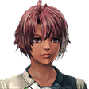

Nearly every quest, Tyrant, collectible, and probe site on 惑星ミラ stays available indefinitely into the post-game, so you can explore at a relaxed pace. Only one companion's city conversations carry a hard story cutoff, accompanied by a small group of two-way quest branches, optional NPC survival choices, and brief world-state windows gathered here so you can claim every scene and reward on your first playthrough.
ラオ permanently leaves the playable roster upon starting Chapter 9, making his five city conversations the most important time-sensitive checklist in the campaign. Complete all five beforehand with ラオ removed from your active squad so he appears at each hangout spot, knowing that any equipment on him safely returns later during ダグ's fifth Heart-to-Heart.
#1 悲しい記憶 · 1 Heart · 住宅エリア · 05:00-07:00. Located in the early morning in Deliverance Park in the Residential District. This Heart-to-Heart requires Nine Lives to be completed, since it requires a dog to be set as a pet in the BLADE Barracks. Equip a イヌ pet at the Barracks via ブレイドの仕事.
#2 リーダーとして · 2 Hearts · 工業エリア · 19:00-00:00. He and his teammate Shingo can be found at night at the south end of the Outfitters Test Hangar in the Industrial District after both the previous Heart-to-Heart, Every Dog Has Its Day, and the Affinity Mission, A Friend in Need, are completed. Requires Previous H2H #1: 悲しい記憶. A Friend in パスファインダー.
#3 出会いの意味 · 3 Hearts · マ・ノン宇宙船エリア · Anytime. Located at any time in corridor leading to the Starboard area of the Ma-non Ship after both the previous Heart-to-Heart, Training Troubles, and Chapter 5 are completed. Lao is found in the middle of a large group of Ma-non. He talks about his interactions with the new arrivals to NLA. Requires Previous H2H #2: リーダーとして. 第5章 マ・ノンの民.
#4 なすべきこと · 4 Hearts · 住宅エリア · 07:00-12:00. Located just east of H.B.'s normal spot training with his gun in the morning north of the Cathedral in the Residential District after both the previous Heart-to-Heart, The Fan Club, and Chapter 6 are completed. Lao is training for something he can't really tell others, or his team. Requires Previous H2H #3: 出会いの意味. 第6章 星からの遺物.
#5 胎動 · 5 Hearts · ブレイドエリア · Anytime. Located northwest of the BLADE Tower in the Administrative District after the previous Heart-to-Heart, Teamwork is completed at any time. Requires Previous H2H #4: なすべきこと.
Mutually Exclusive & Branching Quests0/13 (0%)
Several side quests ask you to make a permanent call that either unlocks one of two follow-up missions or alters dialogue and reward payouts. Both paths count equally toward Mira's 開拓率, so review the outcomes below whenever you reach one of these decision quests and pick whichever resolution you prefer.
Route A · 恋するデフィニア. Choose to eliminate/destroy フォルトゥン at the end of Definian Downfall. フォルトゥン dies permanently, post-Chapter 12 Normal Mission 'Definian 恋するデフィニア' (helping リヴィア find a partner in NLA, with objectives varying by Cross's gender) unlocks instead of 'Fortun and 旅立ち'.
Route B · 旅立ち. Complete prerequisite Normal Mission 'Good フォルトゥン争奪' beforehand and choose to spare/reprogram フォルトゥン's personality during Definian Downfall. フォルトゥン survives with a reformed personality alongside エリオ, post-Chapter 12 Normal Mission 'Fortun and 旅立ち' unlocks instead of 'Definian 恋するデフィニア'. (Both routes still award the Megaflame-B schematic SSM-USP1480SA Megaflame-B (MDS-USP1480SA Flame-Assault) in Definian Downfall.)
Route A · None. Choose to exterminate the invasive リトル・ズースs in New Los Angeles. 先人の士官服 + 7,000G and prevents future BLADE casualties, permanently locking out the follow-up Normal Mission 'A 後悔先に立たず'.
Route B · 後悔先に立たず. Choose to spare and release the リトル・ズースs. Still awards 先人の士官服 + 7,000G and unlocks follow-up Normal Mission 'A 後悔先に立たず' (+13,000G, 230 EXP), though BLADE casualties occur against grown suids in that follow-up.
Reward & Outcome Branches
金剛不壊之刀. Route A triggers via Select 'Refuse' when デ・ジング offers you the recovered blade at 毒蛇の抜け道 in 黒鋼の大陸.. Route B triggers via Select 'Accept' when デ・ジング offers you the blade at 毒蛇の抜け道.. Route B awards the unique one-time Longsword 'Unbreakable 金剛不壊之刀' (+50,000G & Glaive Series Holofigure). Route A forfeits the Unbreakable Sword permanently (only giving 50,000G & the holofigure).
オルフェの選択. Route A triggers via Return directly to オンオトナム at the 教会 without defeating Telethia, 終焉のテレシア.. Route B triggers via Defeat Lv. 99 Telethia, 終焉のテレシア at 神鳥寝所 in 夜光の森 during the mission before reporting back to オンオトナム.. Route B obtains 'Run'tonam's ルンオトナムの右腕', preserving ルンオトナム's Ovah memory and inspiring On'tonam to reform Orphean society. Route A leaves the Orphe in rigid obedience to the Ovah and skips the quest-specific Telethia variant.
ニュースター. Route A triggers via Select 'Agree' when

アクセナ proposes testing the prototype ラムジェット on a larger target (Trump Arenatect) in 白樹の大陸.. Route B triggers via Select 'Object' to only test the rifle against five Trump Papils.. Agreeing fights an extra Trump Arenatect and gets the enthusiast result text with アクセナ, remember to unequip the test rifle before reporting to ティカ to receive your permanent ラムジェット
セレストスリー. Route A triggers via Select 'Insist' or 'Interrogate' after defeating ブリッグズ in Primordia's Molten Hollow.. Route B triggers via Select 'Execute' to kill ブリッグズ on the spot.. Route A spares ブリッグズ and triggers a 3-enemy ambush フォスダイク, モアハウス, and Briggs). Route B permanently kills Briggs and spawns higher-stat Enemy Index variants of Fosdyke and Moorehouse.
スラブティの真意. Route A triggers via Focus exclusively on MG062: MG062：メギシア at Milligan Supply Base without defeating any of スラブティ・ペイガス's Berserk Prone subordinates.. Route B triggers via Defeat any of Slovity's Berserk Prone subordinates during the battle (disable AOE Arts on AI party members to avoid this).. Route A pays 80,000G (vs. 30,000G on Route B), keeps Slovity's warriors alive, and enables バイアス 大樹の一族 + バイアス 巌窟の一族 cooperation in 'An 古の伝承'.
残党スナイパー. Route A triggers via Select 'Act Methodically' on the Ma-non Ship deck and gather NLA Sniper Info before ambushing the Last Galdr.. Route B triggers via Select 'Act Unexpectedly' to rush the Last Galdr without intel.. Route A completes cleanly (+52,000G). Route B forces you to pay 500,000 Credits in damages to Heradot
NLAでの役割. Route A triggers via Report Roselle's illegal pollutant scheme to BLADE HQ to protect the Zaruboggan Shiraton.. Route B triggers via Accept Roselle's bribe and look the other way.. Route A protects Shiraton (20,000G). Route B pays 70,000G bribe money.
上納. Route A triggers via Select 'Compromise' and gather 14 Kiweggs in Oblivia for the Prone Keeper.. Route B triggers via Select 'Fight' and defeat the Prone Keeper and Prone Fighters.. Route A awards 30,000G (10x payout). Route B only awards 3,000G (plus Enemy Index entries for the Prone Keeper).
秘密の届け物. Route A triggers via Deliver Zazazan's recovered package to Bodada at the Nopon Bazaar as instructed.. Route B triggers via Hand the suspicious package over to Loma at the Nopon Bazaar instead.. Route A pays 13,000G but lets contraband pollen orbs circulate. Route B pays 0G but stops the contraband safely.
ノポンの伝統工芸品. Route A triggers via Give materials for a Santa hat to ノスス.. Route B triggers via Give materials for a pom-pom beanie to ノスス.. Permanently determines which hat Nosusu crafts and wears.
自由への決闘. Route A triggers via デ・エジク's independence during the duel quest.. Route B triggers via デ・エジク to stay and train under his parents.. Route A permanently relocates De Ezich to New Los Angeles. Route B keeps him at the Wrothian Stronghold.
NPC Survival Choices0/13 (0%)
Named residents across New LA and alien camps can permanently perish on your キズナグラム if a hazardous choice or missing item slips by during their quest. Keep the list below unrevealed while exploring, then click the spoiler mask for a specific quest right before turning it in if you want everyone to make it home alive.
行方不明の輸送ヘリ · Save ハワード. When repairing the helicopter's main rotor at 日向湧水 in 夜光の森, select the **Blue Wire** (confirmed by overhearing a mechanic in the ハンガー). Selecting the Red Wire causes the helicopter to crash on return, permanently killing Howard (even though Route B pays 20,000G vs. 10,000G).
レイクサイドバカンス · Save アジョア. At ビアーノ浄水場 in 原初の荒野, when アジョア asks to leave to take a quick shower, select **Refuse** (convince her to stay put and avoid the water), then inspect Data Level 3 on the terminal. Selecting 'Allow' results in Ajoa's permanent death
コロンダス隊の受難 · Save コロンダス. When speaking with ペーター near バーゼル湖 in 忘却の渓谷, direct ベイツ to **Go South** toward ドロンゴ・キャラバン in 黒鋼の大陸 (Route A). Directing him 'Go West' sends him into toxic 白燐湖, delaying backup so コロンダス dies at 鬼哭の洞窟.
コンパニオンアクアル · Save アクアル. BEFORE heading down to the lowest strata beneath セイブパーク to confront ジェローム, go to the 隔離格納庫前 in the ブレイドエリア to overhear the yellow info bubble 'Bomb-Squad School', then choose **Disarm** (Route B). Without that info and choice, アクアル is killed
文化交流 · Save マ・ノン人. Stand against アレックス (Route B) when confronting him rather than siding with his plot, siding with Alex (Route A, +17,000G) results in xenoform murders.
大樹の一族 / ウゾマ・ヴァサゴ · Save ウゾマ・ヴァサゴ. During 大樹の一族', accept and successfully complete the sub-objective 'Kidnapped: ウゾマ・ヴァサゴ' by rescuing ウゾマ・ヴァサゴ cleanly before he perishes to indigens.
代償 · Save ガス. Choose **Aid** (Route A) to rescue ガス's team despite their trap and defeat the Unruly Petramand (note: do this before Chapter 13 Act 1 if you want Tyrant Glossolalia, the Allochthon to spawn during the fight). Refusing aid (Route B) leaves Team Gus wiped out by indigens.
古の伝承 · Save バイアス 大樹の一族. Complete 'Slovity's スラブティの真意' on Route A (zero casualties to スラブティ・ペイガス's men) and secure バイアス 巌窟の一族 reinforcements (Route B of An Ancient Legend) so zero Prone casualties occur.
忠義心 · Save ゲ・ジユ. After defeating the Marnuck Scouts at ト・フノム段地 in 黒鋼の大陸, pick up the red key item orb 'Vi ビ・セザの腕輪' on the west side of 箱罠の要塞 BEFORE speaking to ゲ・ジユ, give her the bracelet, and choose **Shake Head** (Route A). Otherwise Ge Jewhe dies in battle
怨敵 · Save ダ・ナグテ・ダ・ギリ・ダ・ゼウレバ. When advising ニ・ジンガ at 忘却の渓谷's ラースの根城 during the day, select **Suggest Flame** (exploiting Queen Jacul's -50 Thermal weakness) followed by **Warn of Charging** (Route A). Any other advice leads to Wrothian casualties on Route B
仇討 · Save ゾ・ザジ. Intervene promptly on Route A to stop ゾ・ザジ before she is critically wounded.
紅き死神の挑戦 · Save ブラッドロブスター. After collecting all ロブスターベイビーs across NLA (49 first, then 49 more, then 1 in Division Drive + 1 at East Melville Street) and defeating ブラッドディスペアー inside グロウス洞窟基地, choose **Stay Your Hand** (Route B) to spare the culprit's life, or **Deploy the Hammer** (Route A) to execute them.
大樹の一族の力 · Save オドセント. Gather Noranlilies to calm and retrain Odsent for ザッハ・コケート (Route A) instead of putting the beast down (Route B).
World & Survey Windows0/4 (0%)
A few environmental landmarks and minor Affinity Chart links depend on narrow survey windows or how quickly you finish a story boss phase. None of these block 100% Mira Survey, making them purely optional keepsakes for thorough completionists.
Chapter 10 Boss (Zu Pharg) Sylvalum Natural Stone Arches Permanent Destruction · 白樹の大陸・音無しの砂海南部. During Phase 2 of the Chapter 10 boss battle against ズ・ハッグ (Lv. 39), the grounded colossal mech walks north from South 音無しの砂海南部 toward シエル湖. If Phase 2 lasts ~2 minutes 30 seconds, Zu Pharg fires on and permanently collapses the first natural stone arch/land bridge spanning South Silent Sandsea, at ~5 minutes 00 seconds, it permanently collapses the second stone arch These arches never regenerate for the rest of the save file (any Pure Miranium collection nodes on top relocate to the sand below). To keep Sylvalum's iconic stone arches intact forever, burst Zu Pharg (Phase 2) down within 2m30s using Gravity Skell weapons (e.g. G-Buster / Zweihand)
H.B. & Eleonora Missable Affinity Chart Link ('The King of Fear') · ブレイドエリア・ブレイドコンコース. Affinity Mission 'The King of 恐怖の暴虐王' requires >= 夜光の森 survey rate. If you complete 'The King of Fear' while Noctilum survey rate is strictly between **25.00% and 29.99%** (under 30%), and then speak to エレオノーラ after Noctilum reaches >= 30%, you trigger a missable bonus dialogue and Affinity Chart link (note: in Switch v1.0.2+, Eleonora's previously unlocalized voice clip in this scene was patched). If Noctilum is already >= 30% before completing 'The King of Fear', this link is skipped.
Chapter 13 World-State & Volitaris Temporary Point of No Return · 浮遊大陸. Starting Chapter 13 alters Mira's world state, and entering 浮遊大陸 during Chapter 13 (Act 3) locks out fast travel back to Mira until the Act 3 final boss is defeated (and losing during Phase 2 of the final boss locks you inside Tower of 終天の塔 until you win or reload). However, nothing on Mira is permanently lost: upon clearing Chapter 13 (Act 3) and loading your cleared save file, you are returned to Mira prior to Chapter 13 with all Chapter 13 rewards アル, オリジナルのアレス, gear, EXP) retained, and you can replay Chapter 13 anytime.
Non-Farmable Unique Mission Weapons & Busted Skell Gear · ニューロサンゼルス. Certain unique named weapons are only awarded once per playthrough, such as アーデルベルト' and グレーテ' during 'Predator and ハンティング', 'Unbreakable 金剛不壊之刀' on Route B of 'The 金剛不壊之刀', 'Ramjet ラムジェット' / 'Ramjet ラムジェットⅡ' in アクセナ's Affinity Missions, and 'Busted' Skell equipment drops. Lock/favorite them in your inventory so they are never accidentally sold.
 デフィニア殲滅
デフィニア殲滅